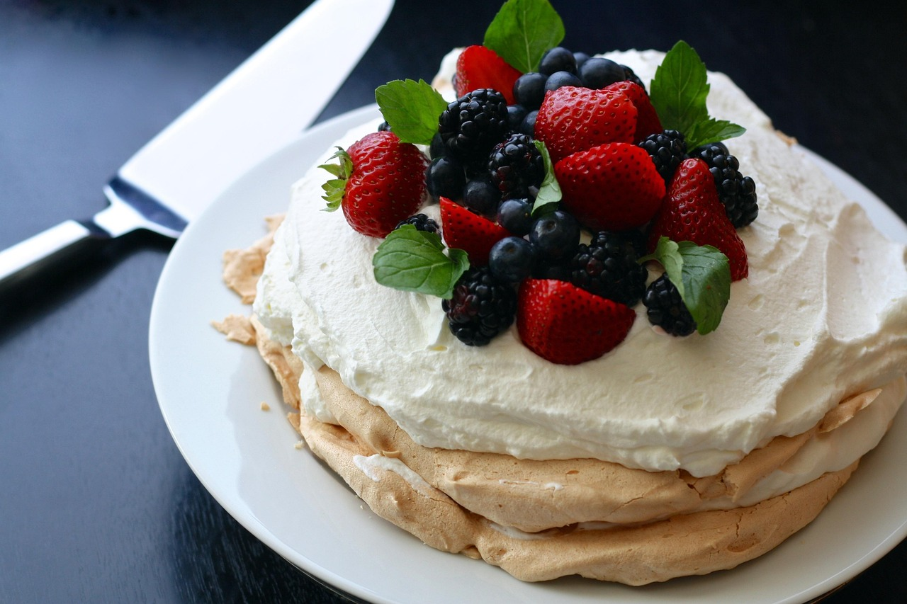

Recipes
A great recipe is at the heart of
every memorable meal. Browse our themed recipes for inspiration or
search by ingredient.

RECIPES WE LOVE
The Best Pavlova
Ingredients
3 Egg whites
1pinch salt,
1Cup white sugar,
1tablespoon cornstarch,
1teaspoon lemon juice
"Directions"
Preheat the oven to 300 degrees F (150 degrees C). Line a
sheet pan with parchment paper. Draw a 9 inch circle on the
parchment. An easy way to do this is to draw around the
outside of a 9 inch pan with a pencil.
In a large bowl, beat egg whites on high speed until soft peaks
form. Add 3/4 cup of the sugar gradually, while continuing to
whip. Make sure sugar is completely dissolved. Mix together the
remaining 1/4 cup sugar with the cornstarch; lightly fold into
meringue with lemon juice.
Spread a layer of meringue to fit a circle on parchment,
approximately 1/4 inch thick. With the remainder of mixture, a
pipe or spoon swirls around the edges to form a shallow bowl
shape.
a large bowl, combine the cream and half a cup of
confectioners sugar, and whip until thickened. Decorate with
fruit of your choice; strawberries are excellent.